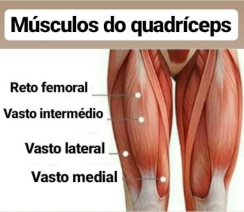
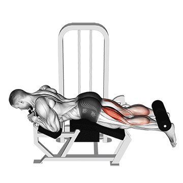
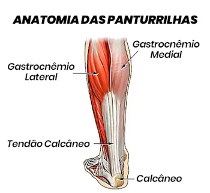
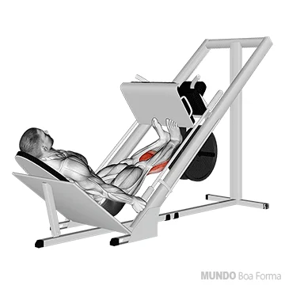

Quadríceps
12 séries
(14-12-10-8)

O quadríceps é um grupo muscular localizado na parte da frente das coxas, que é formado por quatro músculos diferentes – vasto intermédio, vasto lateral, vasto medial e reto femoral.

Agachamento Smith
Esse é o movimento natural e trabalhará os principais músculos da perna (quadríceps, posteriores de coxa, adutores), quadril (glúteos máximo e médio) e core (lombar e eretores de espinha)

Elevação Leg Press 45º
Os principais músculos envolvidos no leg press 45 são o quadríceps, com a participação do glúteo máximo também durante sua execução.

Elevação Pélvica na Máquina
Para que serve elevação pélvica máquina? A elevação pélvica visa principalmente os glúteos – tanto o glúteo máximo quanto o glúteo médio – bem como os isquiotibiais. Seus quadríceps, núcleo e adutores do quadril também serão trabalhados durante o movimento.
Femoral
9 séries
(14-12-10)

O músculo bíceps femoral, também conhecido como músculo bíceps da coxa, é um longo músculo da face posterior da coxa. Juntamente com os músculos semitendíneo e semimembranáceo, forma o grupo de músculos isquiotibiais, também conhecidos como músculos do jarrete.

Cadeira Adutora
Os adutores são músculos internos da coxa e são responsáveis por unir a perna ao quadril, além de participar na rotação externa/lateral e flexão da coxa.É a cadeira em que você fecha as pernas, empurrado o peso da máquina “para dentro” e fortalecendo os músculos na parte lateral interior da coxa.
Mesa Flexora → Stiff com o Peso do Próprio Corpo (Bi-Set) .
A Mesa Flexora é um dos melhores exercícios para trabalhar esses músculos dos membros inferiores,isquiotibiais (ou posteriores da coxa), fortalecendo a região. Isso ajuda a evitar problemas nas articulações dos joelhos e quadril. O exercício de stiff é Bi-Set, com o peso do próprio corpo, sua principal função é estender os membros inferiores, para tanto, não deve haver a flexão das pernas.

Cadeira Flexora
A cadeira flexora ou é um exercício de isolamento básico que visa dois grupos musculares. O isquiotibiais (os músculos bíceps femoral, semitendíneo e semimembranoso) de forma primária e os músculos da panturrilha de forma secundária.
Panturrilha
9 séries
(14-12-10)

A panturrilha, ou tríceps sural, é um conjunto de três músculos localizados na parte de trás da perna: gastrocnêmio, sóleo e plantar. Esses músculos se unem para formar o tendão de Aquiles e, então, se inserem no calcâneo, o osso do calcanhar.

Elevação em Pé no Aparelho
A elevação de panturrilha em pé no aparelho é um exercício que foca no fortalecimento dos gêmeos. Os músculos trabalhados são os gastrocnêmios (ou gêmeos) que ficam na parte externa da panturrilha.
Elevação Panturrilha no Leg Press
fazer panturrilhas no leg é útil para treinar as panturrilhas como um todo, mas principalmente o músculo gastrocnêmio.

elevação de Panturrilha Sentado
Na elevação na posição sentada, o músculo sóleo é o mais solicitado dos três